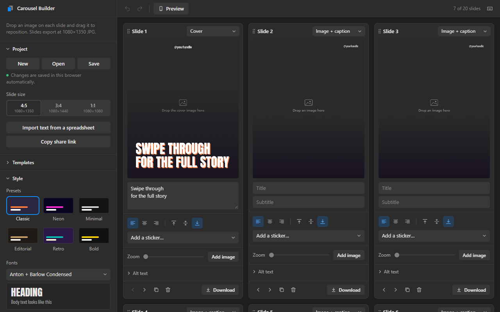
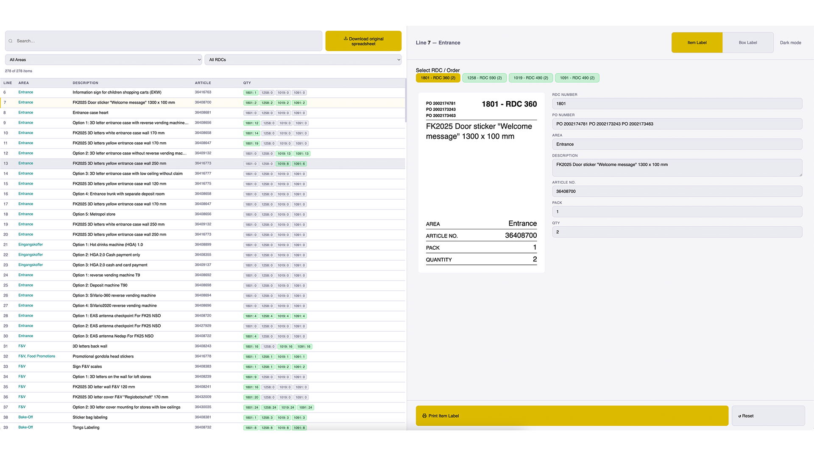
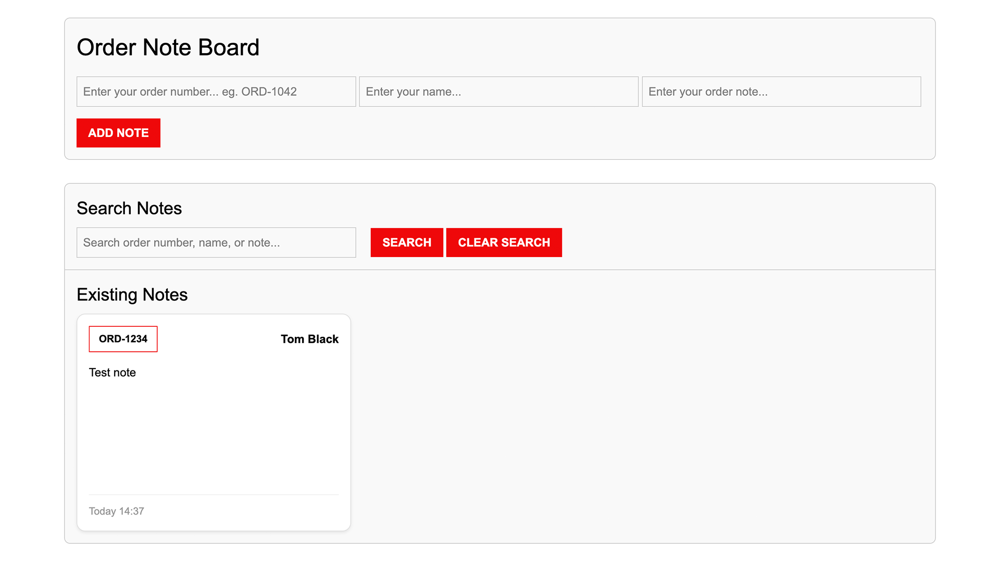
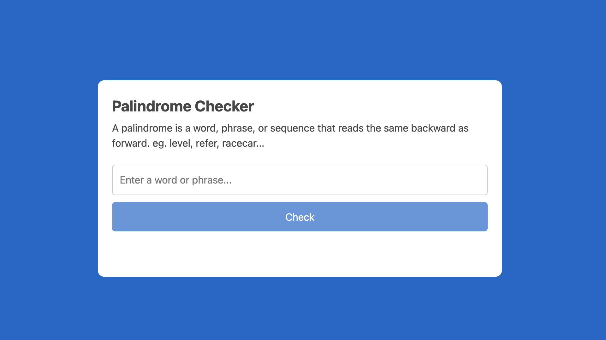
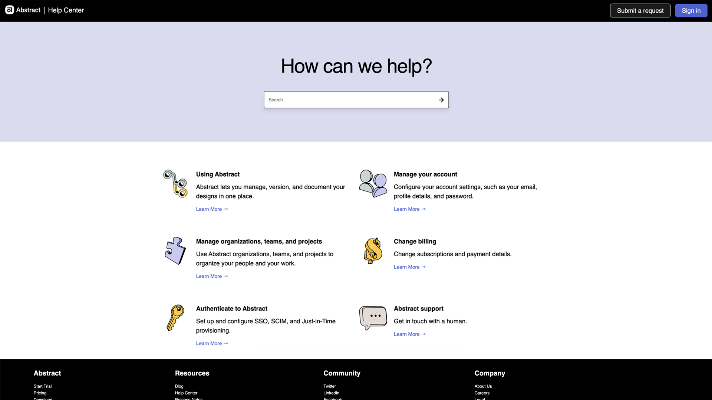
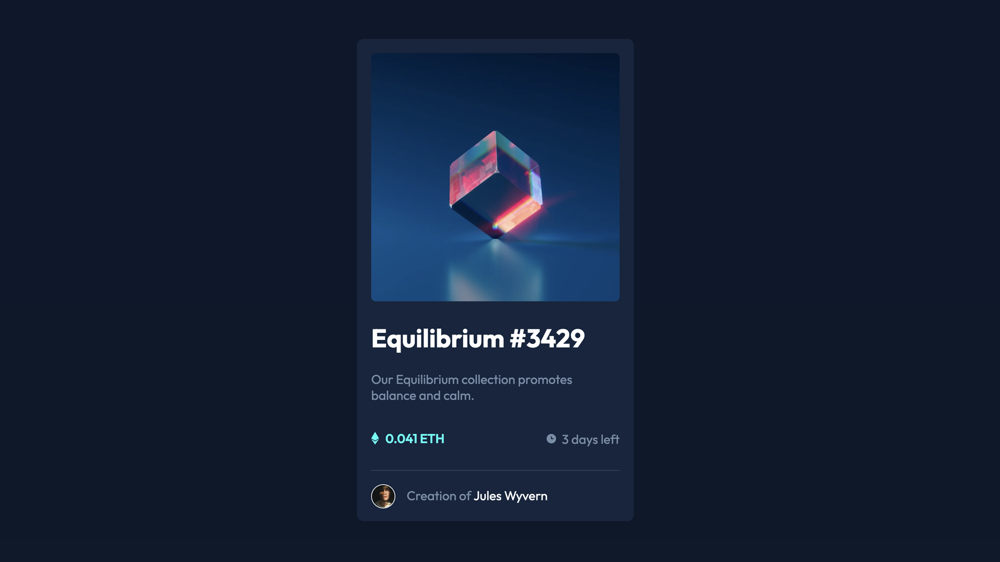
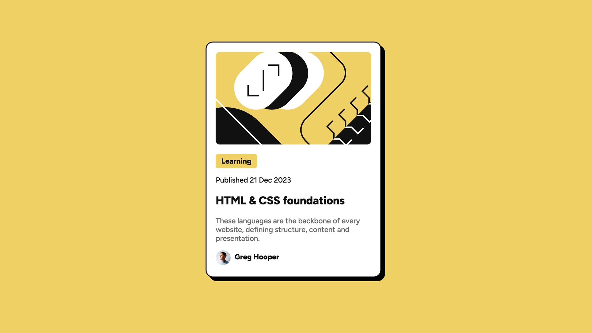
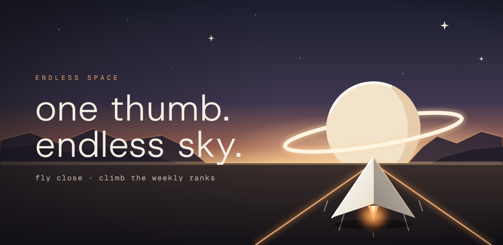
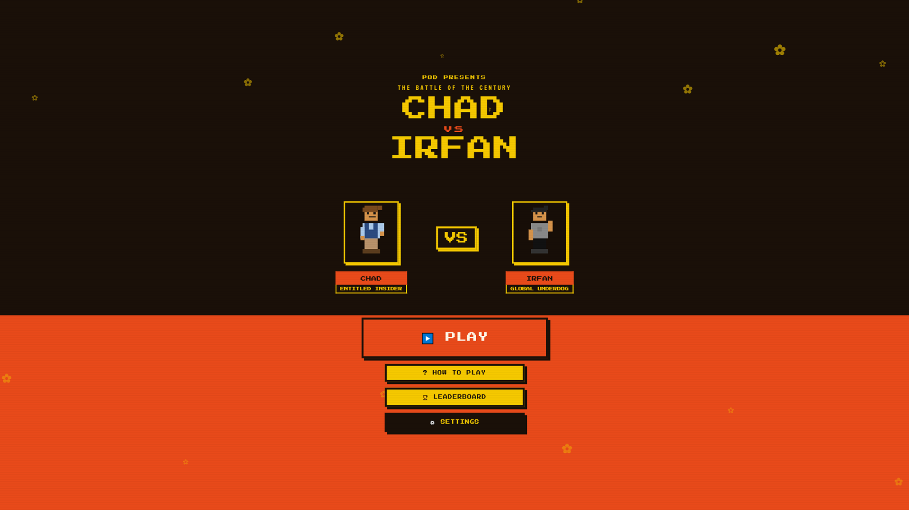

projects
hover or click to learn more!
web/software development

Carousel Builder
A browser-based tool for building Instagram carousels, built with Vue 3, TypeScript and Pinia. Drop in images or video, lay out text, pick a style preset and font pairing, preview it on a phone and export every slide. It has 10+ slide types, undo/redo, drag-to-reorder and spreadsheet import, and everything runs locally with work saved in the browser. GitHub





music
games

Endless Space
A one-thumb 3D endless runner for Android, built with Three.js, TypeScript and Vite and packaged with Capacitor. Steer a small ship through canyons, ice fields, asteroid belts and the decks of a starship. Every course, texture, sound effect and piece of music is generated procedurally. It has a ranked weekly course with ghost races, seven leagues and leaderboards. Google Play GitHub